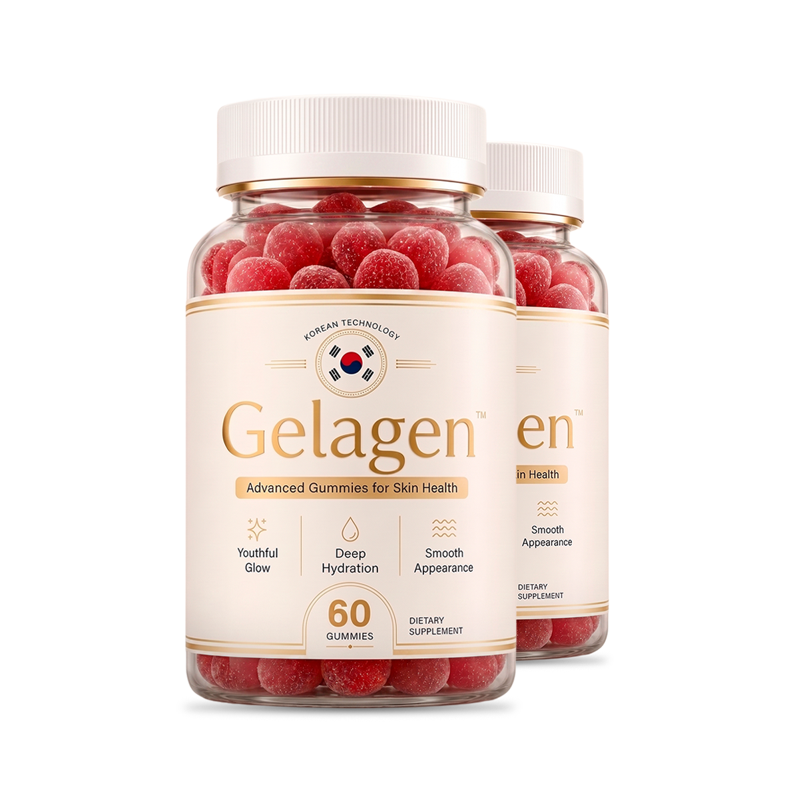

Why More Women Are Skipping Botox for This Instead
I spent two years on creams and serums that all promised the same thing. None of them explained why my skin, hair and nails were all falling apart at the same time — until I found out they were never three separate problems.
I have a drawer full of half-used jars. Serums, retinol creams, a jade roller I used exactly twice. I could open a small pharmacy with what's under my sink.
It started small. My nails got thin enough to bend instead of break. Then my hair started coming out in the shower drain in a way it never used to. Then the dullness — the kind of tired-looking skin that no amount of concealer quite fixes.
I did what anyone does. I bought a better moisturizer. Then a "brightening" serum. Then a hair mask that smelled expensive enough to be convincing.
None of it stuck. A week of looking better, then back to where I started.
What I was missing, right in front of me
My sister-in-law, Priya, is a dietitian. She came over for dinner, saw the drawer (I'd left it open, mid-inventory of what to throw out), and asked me one question: "What have you actually been eating this month?"
I laughed it off. Then I actually thought about it. Coffee for breakfast. Salad, most days, because I was "being good." Whatever was fastest for dinner.
"Your skin, your hair, your nails," she said, "are the last place your body sends nutrients. Not the first. If you're running low on the raw materials they need to rebuild, that's where it shows up first — because everything more urgent gets fed before them."
That reframed the entire two years for me. I hadn't been unlucky. I'd been trying to fix a supply problem from the outside, with things that never got past the surface.
Three "separate" problems, one root
Priya broke it down the way she does for her patients:
- Your nails are thin or peeling, even though you don't bite them or use harsh polish removers
- Your hair sheds more than a small handful when you wash it
- Your skin looks tired or dull no matter how much you sleep or how much water you drink
- You've spent real money on topical products that helped for a week, then stopped working
I said yes to every one. Priya's point was simple: creams work on the surface. What she was describing works on the supply line underneath it — the one topical products can't reach at all.
What I tried before (and why none of it lasted)
- Retinol serum. Helped short-term, dried out my skin, did nothing for my hair or nails.
- Biotin gummies from the drugstore, the cheapest ones. Took them for six weeks. Honestly couldn't tell if anything changed.
- A $40 hair mask. Smelled incredible. My hair still fell out at the same rate.
- Cutting back on washing my hair, on advice from a forum. Just made it look worse, faster.
Every one of these treated the outside. None of them addressed what Priya was talking about: whether my body actually had what it needed to rebuild in the first place.
What Priya actually recommended
She wasn't selling anything — she just said to look for a supplement that covered the basics properly instead of guessing with drugstore biotin alone. That's how I ended up looking at Gelagen.

It's a gummy, not a pill, which mattered to me — one more capsule to remember was never going to happen. Two a day, about 30 minutes before a meal.
What changed for me
I'm not going to tell you my hair transformed overnight, because it didn't. The first thing I noticed, a few weeks in, was fewer strands in the shower drain. My nails held a manicure longer without chipping. My skin looked less tired in a way that wasn't really about makeup anymore.
I still moisturize. I still wear sunscreen. I just stopped expecting a jar applied to the outside to fix something that was running low on the inside.
Before you talk yourself out of this
How to get Gelagen (and which option I'd look at)
Gelagen is only available on the official website, not in stores.
Prices match what's shown at checkout on the official site. Confirm current pricing before you order.
Check today's price on the official website:
Check Gelagen Availability »Questions I had before ordering
Where can I buy Gelagen?
Only on the official website. It isn't sold in stores.
How do I take it?
Two gummies a day, about 30 minutes before a meal, per the official label.
How long until I notice anything?
Everyone is different. In my case, the first thing I noticed was fewer strands in the shower drain, a few weeks in.
Is it a subscription?
No. According to the company, every order is a one-time purchase with no automatic renewals.
Which option makes the most sense?
The 6-bottle supply has the lowest price per bottle. The 3-bottle supply is a reasonable way to give it a fair try. Check current pricing on the official website.
What if it doesn't work for me?
Orders come with a 60-day guarantee from the purchase date. The company asks you to use the product for at least 30 days first. Read the full refund terms on the official website before ordering.
If your bathroom cabinet looks like mine used to
I'm not saying throw out your skincare. I still use mine. I'm saying that if you've tried everything on the outside and nothing sticks, it might be worth asking what's happening on the inside — the part no cream can reach.
See the options and guarantee terms on the official website:
Visit the Official Gelagen Website »